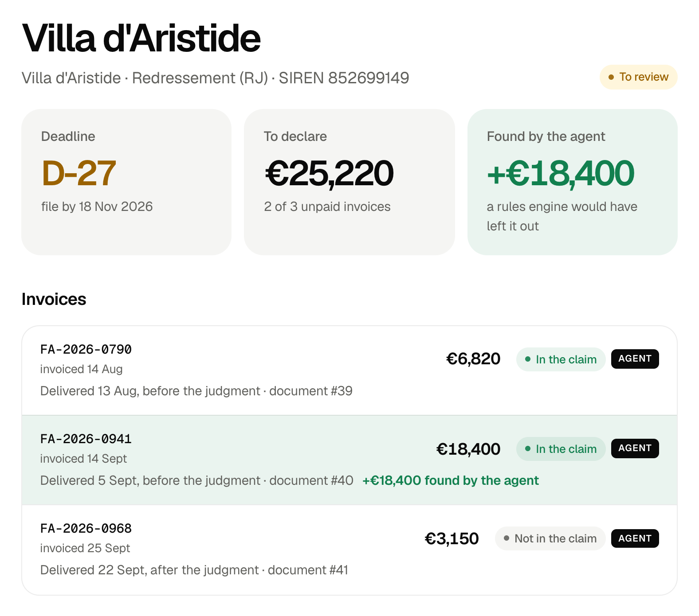

On every new BODACC notice, the agent investigates · code applies the law
Messy CRM name
Legal entity found
Invoices investigated
Claim ready to sign
Value of claims missed · 50-case benchmark
€0
FORCLOS
€622k
SIREN alerts · Infogreffe, Creditsafe…
€685k
Search by name · bodacc.fr
42/42 insolvent customers found·0/8 false alarms·42/42 deadlines exact
Real BODACC notices and register records, synthetic CRM errors; 20 cases held out, run once. Alternatives modelled, not tested.
Who it’s for
French SMEs that sell on credit and have no credit manager.
Why now
68,600 insolvencies in 2025, a record (Banque de France).
First users
Accounting firms: each one brings hundreds of SMEs and their receivables.
Data layer
BODACC synced every 30 min, company register, your ledger: one Aiven PostgreSQL memory.

Live agent run · the invoice a rules engine leaves out